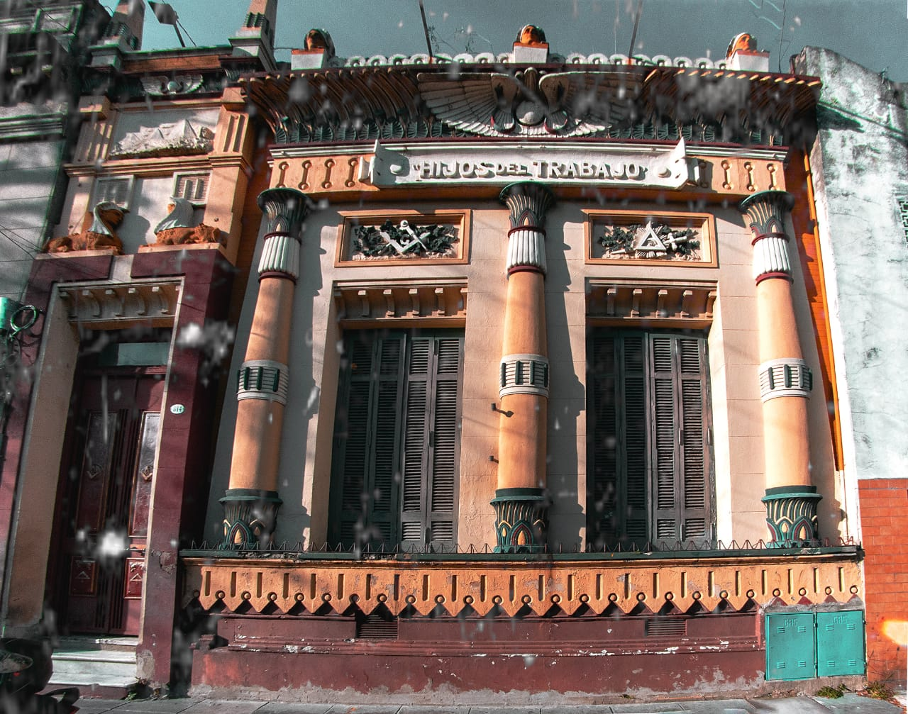

Sabías que…
Nuestra fachada
es egipcia.
Rediseñada en 1919 por Francisco Cabot. Loto, papiro, globo alado: el orientalismo masónico del Ottocento, conservado intacto en una calle de Barracas.

Sabías que…
Rediseñada en 1919 por Francisco Cabot. Loto, papiro, globo alado: el orientalismo masónico del Ottocento, conservado intacto en una calle de Barracas.